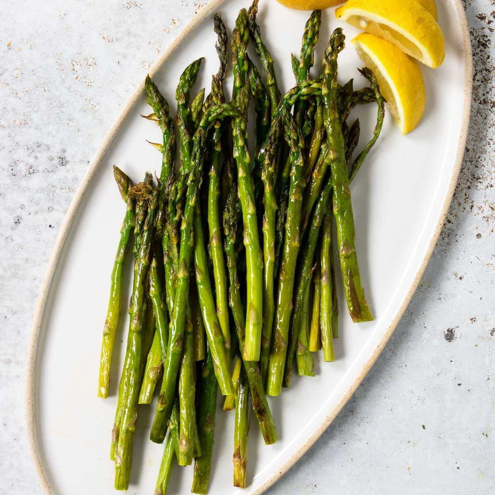

Oven Roasted Asparagus

Description
Asparagus is vegetable that makes a fine addition to nearly any
dish thanks to an earthy cruch that is sure to compliment a tender
entre. When oven roasted with a blend of spices, this vegetable
still maintains its grand cruch while adding an intense flavor.
Ingredients
- 1 bunch thin asparagus spears, trimmed
- 3 tablespoons olive oil
- 1 teaspoon see salt
- 1/2 teaspoon ground black pepper
- 1 tablespoon lemon juice (optional)
- 1 clove garlic, minced (optional)
- 1 1/2 tablespoons grated Parmesan cheese (optional)
Directions
- Preheat oven to 425 degrees F (220 degrees C).
- Place the asparagus into a mixing bowl, and drizzle with olvie oil.
Toss to coat the spears, then sprinkle with Parmesan cheese, garlic,
salt, pepper. Arrange the asparagus onto a baking sheet in a single layer.
- Bake in the preheated oven until just tender, 12 to 15 minutes
depending on thickness. Sprinkle with lemon juice just before serving.
Home